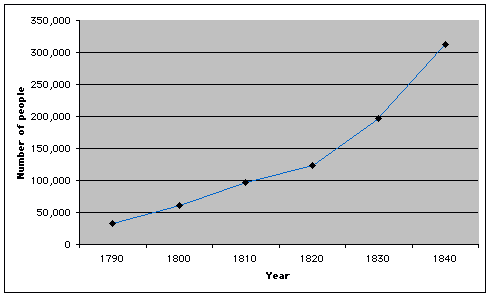
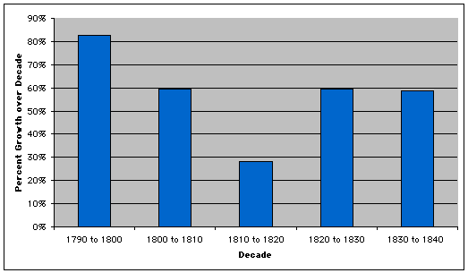

This is an archived copy of History Matters, provided by the Roy Rosenzweig Center for History and New Media. To explore this content in a new interface, visit Who Built America?.

|
|
To make
sense of the past, historians try to identify patterns in the evidence
they collect. They look for connections between events or between various
circumstances surrounding a single event. They try to determine what
changed versus what stayed the same over time. At their most ambitious,
they search for an underlying logic that explains historical trends,
historical disjunctures (such as political and technological revolutions),
and— ultimately—the dynamics of human behavior. Otherwise
history would be just "one damn fact after another."
Let us
begin with totals. Just tracking the total number of people in
a particular place over time can be revealing. For example, using federal
census records, we can determine how many people resided in New York
City at ten-year intervals between 1790 and 1840. Indeed, the census
takers themselves did the necessary addition, and the government published
the results: in 1790, there were 33,131 residents; in 1800, there were
60,489; in 1810, there were 96,373; in 1820, there were 123,706; in
1830, there were 197,112; and in 1840, 312, 710. Written out in a single
sentence, these numbers may not mean much. But if you put them in a
table, you should begin to see a pattern.
This graph
makes the pattern even clearer: Graph 1: The Population of New York City, 1790-1840  How can
that be? Graph 1 illustrates the pattern of population growth by decade
in absolute terms. You must still "read" the patterns carefully,
however. It is tempting to conclude from Graph 1 not only that the population
of New York City grew substantially between 1790 and 1840, but that
it grew at a higher rate after 1820 because the line on the graph
rises more steeply after 1820 than before.
Graph 2: The Rate of Population Growth by Decade, New York City, 1790-1840  Graph 2 visually illustrates the change in the rate of population growth by decade. So what can we learn from Graph 2? By itself, it suggests that New York City’s population increased continuously between 1790 and 1840, but not at a consistent pace. While the population grew at virtually the same rate (59%) in each of three decades (1800 to 1810, 1820 to 1830, and 1830 to 1840), it grew at a noticeably higher rate in the 1790s and a markedly lower rate in 1810s. Why? Neither Graph 2 nor Table B provides an explanation, but were we to carry our study of New York City forward, we would want to investigate what was distinctive about the two "abnormal" decades.
|
|||||||||||||||||||||||||||||||||||||||||||||

|
||||||||||||||||||||||||||||||||||||||||||||||